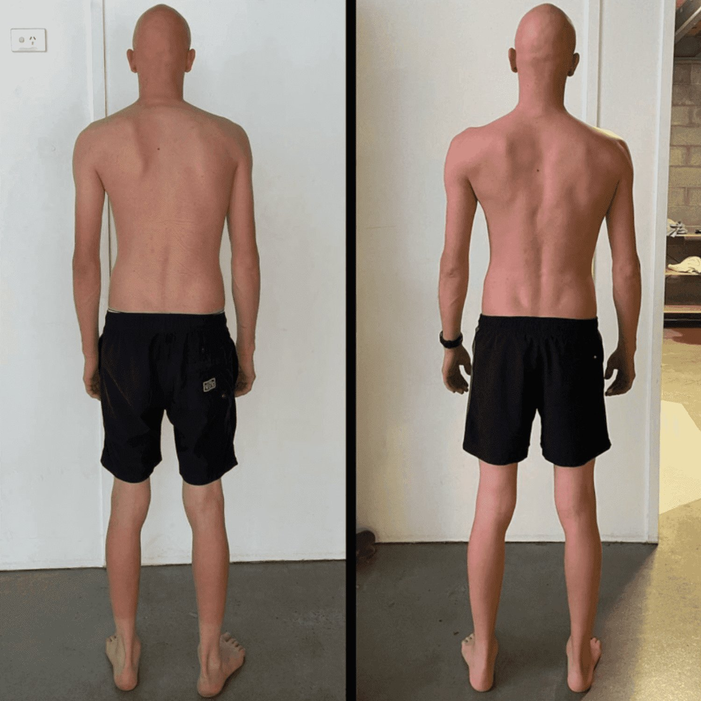

Scapular winging (also known as scapula alata) occurs when the shoulder blades stick out. Scap winging is abnormal as the scapulars should lay flat against the rib cage.
The typical go-to for most people with this condition is to search for scapular winging exercises. Unfortunately, many of these exercises fail to address the root causes of the problem. Let's dive into why typical winged scapula exercises tend to fall short. We will also address what you should focus on for real, long-term results.
A Few Scapular Winging Cases Fixed With Functional Patterns
Why Do Typical Scapular Winging Exercises Fail?
Most people are advised to do a few common exercises to fix scapular winging, such as:
-
the wall push-up,
-
the scapular retraction exercise,
-
or the serratus anterior activation.
However, these exercises tend to isolate parts of the body and often fail to integrate functional movement patterns. They neglect the fact that scapular winging is rarely just a problem of muscle weakness. Here’s a brief look at why these exercises don't work:
-
Wall Push-Up: This is often used as a test for scapular winging, but it's ineffective at solving the problem. The shoulder blades do not integrate well with the rest of the body. The movement does little to correct the lack of thoracic rotation.
-
Serratus Anterior Activation: While important for stabilising the scapula, this exercise isolates a single muscle. It does so without addressing how the scapula functions in the larger context of your shoulder movements. This lack of overall scapular connection and integration is a major root cause of winging.
-
Scapular Retraction: Retraction exercises may seem logical. However, they do not address the dynamic rotation and pressure systems that actually hold the scapula in place. During movement, a series of movement patterns must happen to create the pressure needed to hold the scapular in place.
These exercises treat scapular winging like a local problem rather than the full-body issue that it is. To truly fix scapular winging, we need to focus on the root causes.
What Actually Causes Scapular Winging?
The real solution to scapula winging lies in understanding how your body functions as a whole. Functional Patterns identifies several root causes of winged scapula, and traditional exercises do not address any of them. Let’s explore them:
1. Internal Pressure Issues
One of the most significant contributors to winging shoulder blades is inefficient internal pressure. If you're not maintaining proper intra-abdominal pressure (IAP), your compromise your body's ability to stabilise its structures. This includes stabilising the shoulder blades.
Without proper pressure management, your scapula won’t stay anchored to the rib cage. We don't simply isolate muscles like in traditional winging shoulder blade exercises. We focus on improving IAP through exercises that integrate breathing, posture, and overall body mechanics.
2. Inefficient Breathing Patterns
Breathing is often overlooked when addressing scapular winging. Inefficient breathing patterns, such as chest breathing, cause rib cage compression, leading to poor shoulder stability. To fix this, you need exercises that promote proper diaphragmatic breathing, improving rib cage expansion and spinal decompression. When your body breathes efficiently, the scapula can anchor better, reducing shoulder instability.

3. Lack of Thoracic Rotation
The scapula relies on proper thoracic rotation for full function during everyday movements like walking or raising your arms. If your spine is compressed or your thoracic spine is immobile, the shoulder blades won’t move properly.
Therefore, when doing overhead activities, you may experience impaired rang of motion. Compression caused from a lack of rotation can also cause nerve damage and rotator cuff inflammation. Learning to rotate your spine correctly is absolutely vital for healthy scapular positioning.
Functional Patterns incorporates exercises that rotate the spine and improve overall rotational capabilities. This is addressing not just the winged scapula but your entire body's movement mechanics.
Exercises That Actually FIX SCAPULAR WINGING
Are you eager learn how to fix winged shoulder blades? To truly fix winged scapula, you need exercises that address these root issues. Rather than relying on passive, isolated movements, we focus on integrating functional exercises that promote stability, mobility, and full-body coordination.
1. Spinal Decompression
By decompressing the spine, you relieve pressure on the shoulder joints and rib cage, giving the scapula room to function properly. Spinal decompression exercises are key for fixing scapular dyskinesis and balancing out the forces acting on your scapula.
2. Thoracic Rotation Exercises
These exercises help restore the natural rotation of the spine, improving how the scapula moves during functional activities. Unilateral movements like step presses that engage the core, shoulder blades, and hips can retrain your body to move more fluidly.
3. Intra-Abdominal Pressure (IAP) Training
Improving IAP involves strengthening the connection between the rib cage and pelvis. Exercises like the Functional Patterns step press or other movements that engage the entire body will teach you how to stabilise the scapula naturally through proper pressure management. To learn how to repair winged scapula, learn how to move your body as the integrated, tensioned structure that it is.

Conclusion: The Functional Approach to Fixing Scapular Winging
To fix scapula winging, typical winged scapula treatment like isolating muscles will only take you so far. To truly stop your shoulder blades sticking out, it's essential to focus on exercises that correct the root causes.
These include: improving internal pressure, re-aligning the spine, and integrating full-body movement. At Functional Patterns, we don’t believe in quick fixes. Instead, we provide a holistic approach to movement that addresses the full complexity of your body.
If you’ve been trying traditional scapular winging rehab and physical therapy with little success, it’s time to take a functional approach. Train with exercises that integrate your body as a whole, promote proper posture, and allow your scapula to function as it’s meant to. Your scapular should be secure, stable, and in sync with the rest of your body.